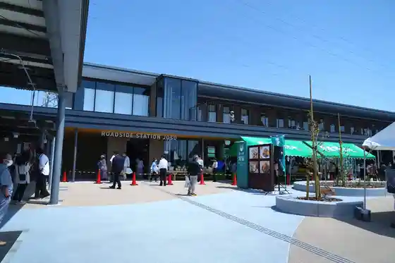
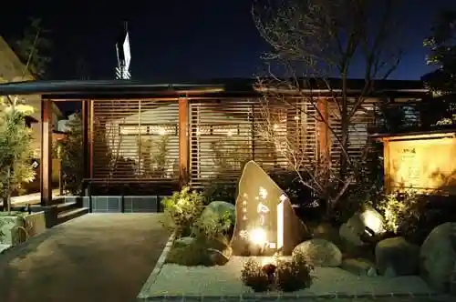
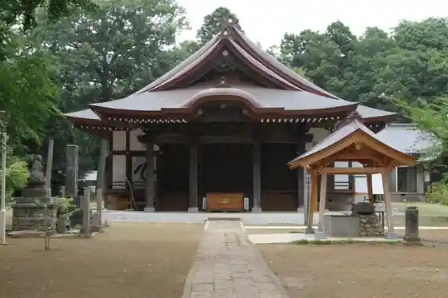
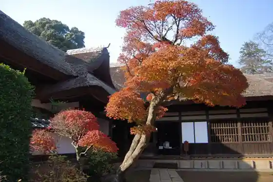

Toyoda Shiro (Joso Chiiki Koryu Center)
Joso, Ibaraki · 0297-42-0169 · Official / source link
Roadside Station Joso
Joso, Ibaraki · 0297-38-7570 · Official / source link

Tennen Onsen Kinu Baths
Joso, Ibaraki · 0297-20-3751 · Official / source link

Kokei Tera
Joso, Ibaraki · 0297-24-0895 · Official / source link

Mitsukaido Fudo Museum Sakano Ie House
Joso, Ibaraki · 0297-24-2131 · Official / source link

Asunaro Village
Joso, Ibaraki · 0297-27-3481 · Official / source link
Dai Nama Sato Tenmangu Shrine
Joso, Ibaraki · 0297-24-1739 · Official / source link
Hitokoto Shu Shrine
Joso, Ibaraki · 0297-27-0659 · Official / source link
GRANBERRY DAICHI
Joso, Ibaraki · 0297-34-1514 · Official / source link
Yoshino Park
Joso, Ibaraki · 0297-22-9349 · Official / source link
Sanchu Shuzo Mise
Joso, Ibaraki · 0297-42-2004 · Official / source link
Hozo Tera Rui no Haka
Joso, Ibaraki · 0297-24-2114 · Official / source link
Anraku Tera (Ganzan Taishi)
Joso, Ibaraki · 0297-24-1533 · Official / source link
Babekyu Village Mori Village
Joso, Ibaraki · 0297-24-1996 · Official / source link
Bando Hon Tera
Joso, Ibaraki · 0297-24-2580 · Official / source link
The Natural Gardens of Sakano (Sakano Garden)
Joso, Ibaraki · 090-2484-4605 · Official / source link
Nagatsuka Fushi no Seika
Joso, Ibaraki · 0297-42-5797 · Official / source link
no Village Jozo
Joso, Ibaraki · 0297-42-2056 · Official / source link
Katsu Taro Ishige Mise
Joso, Ibaraki · 0297-30-4301 · Official / source link
Kauhiiya Ka Wa
Joso, Ibaraki · 0297-23-2182 · Official / source link
Sakairi Seicha Kojo
Joso, Ibaraki · 0297-42-2397 · Official / source link
Choji Sono
Joso, Ibaraki · 0297-43-7638 · Official / source link